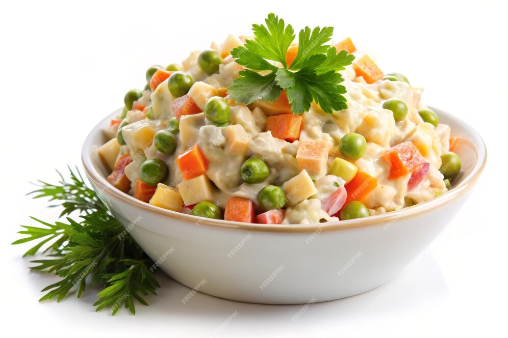
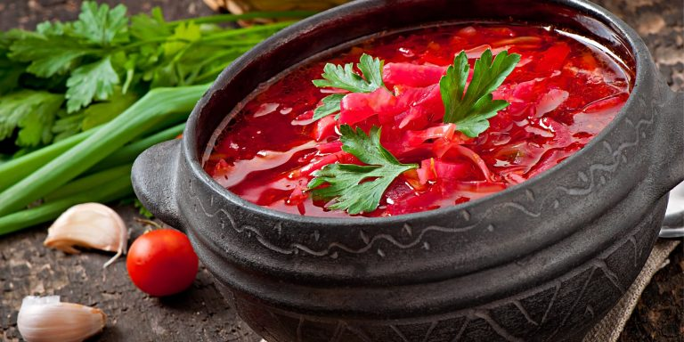

Salada Oliver
Ingredientes:
- Batata cozida
- Cenouras cozidas
- Cebola
- Ervilhas verdes
- Ovos cozidos
- Blanquet de Peru
- Picles
- Maionese
Preparo: Corte todos os ingredientes em cubos pequenos, do tamanho de uma ervilha. Tempere com maionese e decore com ervas.

Sopa Borscht
Ingredientes:
- OssoBuco
- Cenoura
- Cebola
- Batata
- Repolho
- Beterraba
- Tomate
- Ervas
Preparo:Ferva o caldo, acrescente os legumes. Cozinhe até que os legumes estejam prontos. Sirva decorado com verduras.

Sharlotka
Ingredientes:
- Maçãs
- Farinha
- Açúcar
- Ovos
Preparo:Bata os ovos com o açúcar até ficarem firmes e acrescente a farinha aos poucos. Unte uma assadeira com manteiga e polvilhe com pão ralado, disponha as maçãs descascadas e picadas e recheie com a massa. Asse por 40-50 minutos